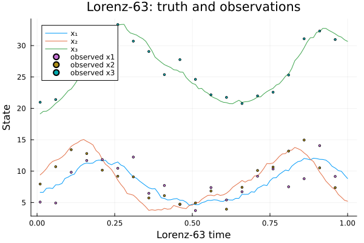
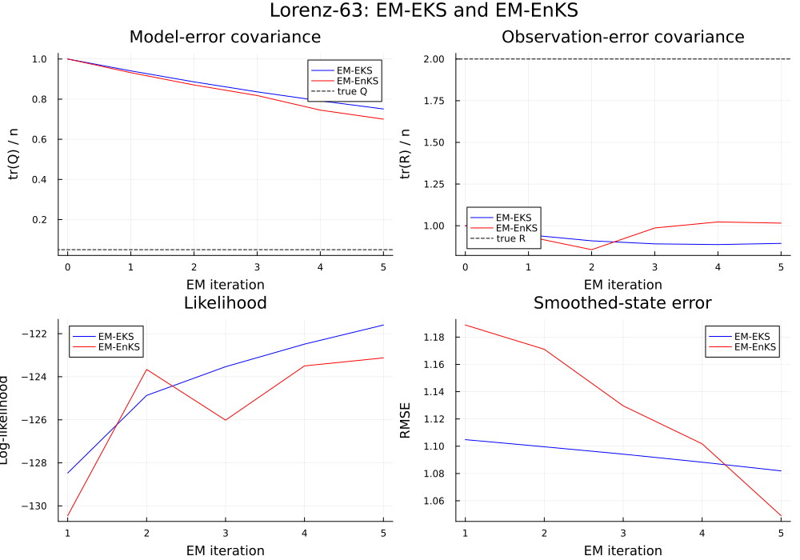
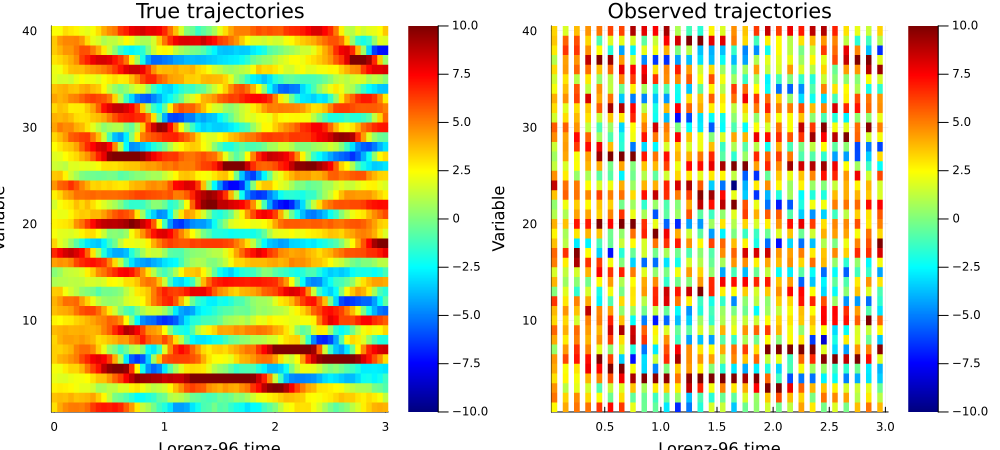
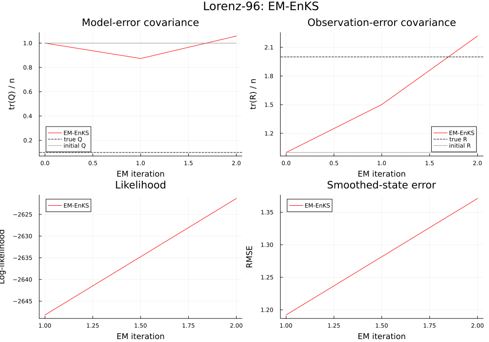

CEDA covariance estimation
This example translates the experiments in the upstream test_CEDA.ipynb notebook into Julia. CEDA estimates model-error covariance $Q$ and observation-error covariance $R$ with expectation-maximization (EM), using either the extended Kalman smoother (EM-EKS) or the ensemble Kalman smoother (EM-EnKS). The experiments below retain both upstream models, observation schedules, initial covariance guesses, ensemble size, and iteration counts.
\[x_k = f(x_{k-1}) + \eta_k,\qquad y_k = h(x_k) + \epsilon_k,\]
where the independent, zero-mean Gaussian errors have covariances $Q$ and $R$. Estimating these covariances with Kalman smoothing and EM is described by Dreano et al. (2017), “Estimating Model-Error Covariances in Nonlinear State-Space Models using Kalman Smoothing and the Expectation–Maximization Algorithm”, Quarterly Journal of the Royal Meteorological Society, 143(705), 1877–1885.
The upstream notebook uses a compiled Fortran model for speed. Here, one classical fourth-order Runge-Kutta step implements each discrete-time transition. Set CEDA_QUICK_DEMO=true to run a short version for smoke tests; the default settings match the notebook.
This is the scope of the upstream notebook: it demonstrates EM-EKS and EM-EnKS on Lorenz-63, then EM-EnKS on Lorenz-96. It does not demonstrate the separate ETKS or adaptive/experimental algorithms found elsewhere in CEDA.
using AnalogDataAssimilation
using LinearAlgebra
using Plots
using Random
using Statistics
const QUICK_DEMO = get(ENV, "CEDA_QUICK_DEMO", "false") == "true"
function rk4_step(f, x, dt)
k1 = f(x)
k2 = f(x .+ (dt / 2) .* k1)
k3 = f(x .+ (dt / 2) .* k2)
k4 = f(x .+ dt .* k3)
return x .+ (dt / 6) .* (k1 .+ 2 .* k2 .+ 2 .* k3 .+ k4)
end
function generate_truth(dynamics, initial_state, steps, Q, rng)
nx = length(initial_state)
states = zeros(Float64, nx, steps + 1)
states[:, 1] .= initial_state
noise_factor = cholesky(Symmetric(Q)).L
for t in 1:steps
states[:, t + 1] .= dynamics(@view(states[:, t])) + noise_factor * randn(rng, nx)
end
return states
end
function generate_observations(observation_operator, states, R, interval, rng)
no, steps = size(R, 1), size(states, 2) - 1
observations = fill(NaN, no, steps)
noise_factor = cholesky(Symmetric(R)).L
for t in 1:interval:steps
observations[:, t] .= observation_operator(@view(states[:, t + 1])) +
noise_factor * randn(rng, no)
end
return observations
end
function climatology(states)
background = vec(mean(states, dims = 2))
centered = states .- background
covariance = centered * centered' ./ (size(states, 2) - 1)
return background, covariance
end
function compare_em_results(eks, enks, Qtrue, Rtrue, nx, no, title)
iterations = length(eks.loglikelihood)
em_steps = 0:iterations
pQ = plot(
em_steps,
[tr(eks.model_noise_covariance[:, :, i]) / nx for i in 1:iterations+1];
label = "EM-EKS",
color = :blue,
xlabel = "EM iteration",
ylabel = "tr(Q) / n",
title = "Model-error covariance",
)
plot!(pQ, em_steps, [tr(enks.model_noise_covariance[:, :, i]) / nx for i in 1:iterations+1];
label = "EM-EnKS", color = :red)
hline!(pQ, [tr(Qtrue) / nx]; label = "true Q", color = :black, linestyle = :dash)
pR = plot(
em_steps,
[tr(eks.observation_noise_covariance[:, :, i]) / no for i in 1:iterations+1];
label = "EM-EKS",
color = :blue,
xlabel = "EM iteration",
ylabel = "tr(R) / n",
title = "Observation-error covariance",
)
plot!(pR, em_steps, [tr(enks.observation_noise_covariance[:, :, i]) / no for i in 1:iterations+1];
label = "EM-EnKS", color = :red)
hline!(pR, [tr(Rtrue) / no]; label = "true R", color = :black, linestyle = :dash)
pL = plot(1:iterations, eks.loglikelihood; label = "EM-EKS", color = :blue,
xlabel = "EM iteration", ylabel = "Log-likelihood", title = "Likelihood")
plot!(pL, 1:iterations, enks.loglikelihood; label = "EM-EnKS", color = :red)
pE = plot(1:iterations, eks.rmse; label = "EM-EKS", color = :blue,
xlabel = "EM iteration", ylabel = "RMSE", title = "Smoothed-state error")
plot!(pE, 1:iterations, enks.rmse; label = "EM-EnKS", color = :red)
return plot(pQ, pR, pL, pE; layout = (2, 2), size = (1000, 700), plot_title = title)
endcompare_em_results (generic function with 1 method)Lorenz-63: comparing EM-EKS and EM-EnKS
The first experiment uses the Lorenz-63 system with $dt=0.01$, $Q=0.05I$, and $R=2I$. Observations are available every five model steps. The original notebook uses a 1,000-step sequence, 500 EM iterations, and 100 ensemble members.
Random.seed!(9)
rng_l63 = MersenneTwister(9)
nx_l63 = 3
dt_l63 = 0.01
sigma, rho, beta = 10.0, 28.0, 8 / 3
function lorenz63_rhs(x)
return [
sigma * (x[2] - x[1]),
x[1] * (rho - x[3]) - x[2],
x[1] * x[2] - beta * x[3],
]
end
function lorenz63_rhs_jacobian(x)
return [
-sigma sigma 0.0
rho - x[3] -1.0 -x[1]
x[2] x[1] -beta
]
end
function lorenz63_transition(x)
return rk4_step(lorenz63_rhs, x, dt_l63)
end
function lorenz63_jacobian(x)
identity_jacobian = Matrix{Float64}(I, nx_l63, nx_l63)
k1 = lorenz63_rhs(x)
J1 = lorenz63_rhs_jacobian(x)
x2 = x .+ (dt_l63 / 2) .* k1
J2 = lorenz63_rhs_jacobian(x2) * (identity_jacobian .+ (dt_l63 / 2) .* J1)
k2 = lorenz63_rhs(x2)
x3 = x .+ (dt_l63 / 2) .* k2
J3 = lorenz63_rhs_jacobian(x3) * (identity_jacobian .+ (dt_l63 / 2) .* J2)
k3 = lorenz63_rhs(x3)
x4 = x .+ dt_l63 .* k3
J4 = lorenz63_rhs_jacobian(x4) * (identity_jacobian .+ dt_l63 .* J3)
return identity_jacobian .+ (dt_l63 / 6) .* (J1 .+ 2 .* J2 .+ 2 .* J3 .+ J4)
end
h_l63(x) = copy(x)
H_l63 = Matrix{Float64}(I, nx_l63, nx_l63)
steps_l63 = QUICK_DEMO ? 100 : 1000
iterations_l63 = QUICK_DEMO ? 5 : 500
members_l63 = QUICK_DEMO ? 32 : 100
Qtrue_l63 = 0.05 .* Matrix{Float64}(I, nx_l63, nx_l63)
Rtrue_l63 = 2.0 .* Matrix{Float64}(I, nx_l63, nx_l63)
initial_l63 = [6.39435776, 9.23172442, 19.15323224]
truth_l63 = generate_truth(lorenz63_transition, initial_l63, steps_l63, Qtrue_l63, rng_l63)
observations_l63 = generate_observations(h_l63, truth_l63, Rtrue_l63, 5, rng_l63)
time_l63 = (1:steps_l63) .* dt_l630.01:0.01:1.0The background mean and covariance are estimated from the simulated truth, as in CEDA. The initial $Q$ and $R$ guesses are both identity matrices.
xb_l63, B_l63 = climatology(truth_l63)
Qinit_l63 = Matrix{Float64}(I, nx_l63, nx_l63)
Rinit_l63 = Matrix{Float64}(I, nx_l63, nx_l63)3×3 Matrix{Float64}:
1.0 0.0 0.0
0.0 1.0 0.0
0.0 0.0 1.0Plot true state trajectories and the intermittent observations.
p_l63_data = plot(time_l63, truth_l63[:, 2:end]'; label = ["x₁" "x₂" "x₃"],
xlabel = "Lorenz-63 time", ylabel = "State",
title = "Lorenz-63: truth and observations")
for variable in 1:nx_l63
scatter!(p_l63_data, time_l63, observations_l63[variable, :];
label = "observed x$(variable)", markersize = 2)
end
p_l63_data
Fit both smoothers using the same model, observations, and initial distribution. The EKS uses the exact Jacobian of the RK4 transition and the identity observation Jacobian.
eks_l63 = em_eks(
observations_l63;
initial_state = xb_l63,
initial_covariance = B_l63,
model_noise_covariance = Qinit_l63,
observation_noise_covariance = Rinit_l63,
dynamics = lorenz63_transition,
dynamics_jacobian = lorenz63_jacobian,
observation_operator = h_l63,
observation_jacobian = _ -> H_l63,
iterations = iterations_l63,
truth = truth_l63,
)
enks_l63 = em_enks(
observations_l63;
initial_state = xb_l63,
initial_covariance = B_l63,
model_noise_covariance = Qinit_l63,
observation_noise_covariance = Rinit_l63,
dynamics = lorenz63_transition,
observation_matrix = H_l63,
ensemble_size = members_l63,
iterations = iterations_l63,
truth = truth_l63,
rng = rng_l63,
)CovarianceEMResult(:enks, [5.695960474126121 5.037993726732219 … 9.31258351679515 9.103423983716146; 6.959396890341295 7.310462448284772 … 6.442767618419119 6.0485088077975515; 21.965387620828352 21.297551525092093 … 30.697272518904448 30.462903289509235;;; 5.828438661395439 5.483724158027398 … 8.533509275947958 8.362683699099113; 7.410997838359847 7.935375327209372 … 6.214031822903117 5.906878280694779; 21.853277494156387 21.218299645675945 … 30.43182984803319 29.867395901897783;;; 5.604577114021954 5.435735892187696 … 9.025879597268501 8.80297731932797; 7.280538814845148 7.791314571001482 … 6.33564613539734 6.01478153918962; 21.759250495953214 21.270304224112973 … 30.62728652240988 30.560021007232105;;; 5.674025758270113 5.213331056897455 … 8.78479796324296 8.634345567004267; 7.4357287518288935 8.097112897506012 … 6.691057852477179 6.4620135538937165; 21.706517377310206 21.302990483926667 … 31.242164414407334 30.709891997933155;;; 5.61395812104832 5.58677424845866 … 9.324192803616185 9.012877824970714; 7.432287285404406 8.045075518854025 … 6.448667259018481 6.179412502916476; 21.4892591699944 20.937178589681764 … 30.788832240785446 30.559255558022947], [0.48730076449254695 0.6381416998817607 0.2058657652295551; 0.6381416998817607 1.2118993312468973 0.18171874775802094; 0.2058657652295551 0.18171874775802094 0.7523043258978084;;; 0.6451599444436733 0.28728989299818153 -0.10506979671110464; 0.28728989299818153 0.4898156430267048 -0.01748765938259355; -0.10506979671110464 -0.01748765938259355 0.4672822525873471;;; 1.519847211921246 0.12761830894615878 -0.14049725555514725; 0.12761830894615878 1.2401366798780382 0.3031063128408315; -0.14049725555514725 0.3031063128408315 0.7179300555439961;;; … ;;; 2.5005913118293654 0.13015370152839437 0.9497534939952587; 0.13015370152839437 1.9623509406892519 -0.06876153999943099; 0.9497534939952587 -0.06876153999943099 2.057492790416068;;; 2.5621901993666354 0.17832716342539054 0.8541782966422117; 0.17832716342539054 3.1941868811536427 -0.0935359734746681; 0.8541782966422117 -0.0935359734746681 3.2920007675138203;;; 3.231181958146015 -0.3007383520023874 1.1355359228708013; -0.3007383520023874 5.038206386464445 -0.0335563655461278; 1.1355359228708013 -0.0335563655461278 4.467082324999119;;;; 0.26633386766463163 0.3075429236593013 0.03516869948674751; 0.3075429236593013 0.5987474371855958 -0.06646255558884538; 0.03516869948674751 -0.06646255558884538 0.3682442987987191;;; 0.38561866174183335 0.07954826187120785 0.1099346334483699; 0.07954826187120785 0.4720797257152498 0.04072626719297895; 0.1099346334483699 0.04072626719297895 0.42823633629614366;;; 1.0718168704400712 -0.14454231929183337 0.1939884069161965; -0.14454231929183337 1.603385243966711 -0.07804341893283796; 0.1939884069161965 -0.07804341893283796 1.0002306652160728;;; … ;;; 2.299771442766142 0.8330561076255232 1.1450698579017506; 0.8330561076255232 3.084783094845097 0.5101118325914371; 1.1450698579017506 0.5101118325914371 3.3254033189284917;;; 4.110606961246894 1.815553843398224 1.2796864463718325; 1.815553843398224 5.085515513905668 -0.10006541522925409; 1.2796864463718325 -0.10006541522925409 4.081975714422689;;; 3.6309828216439906 1.8251437617481383 1.6133647025768696; 1.8251437617481383 4.240358448289498 -0.18758072764118094; 1.6133647025768696 -0.18758072764118094 4.46167072087431;;;; 0.11137521226541762 0.07413312670470276 0.05750223400786126; 0.07413312670470276 0.21049271388682053 -0.02993983372566097; 0.05750223400786126 -0.02993983372566097 0.3959433355886622;;; 0.4403045143264723 0.2065659544945902 0.031068331971019242; 0.2065659544945902 0.4892612910183278 0.03869066767396266; 0.031068331971019242 0.03869066767396266 0.4925297808856143;;; 1.2671080981386371 -0.2280924597091258 -0.042975425636108046; -0.2280924597091258 0.8515333657919048 -0.13246151164451622; -0.042975425636108046 -0.13246151164451622 1.0552650838424638;;; … ;;; 2.749669025004955 0.5269714078797031 0.18723018362593563; 0.5269714078797031 3.3374613864332128 0.21018432006976515; 0.18723018362593563 0.21018432006976515 2.6742496462938887;;; 2.42726536263655 0.8435624150081463 -0.21402159382592587; 0.8435624150081463 4.454672968951399 0.7779561548696069; -0.21402159382592587 0.7779561548696069 2.7630799177567877;;; 3.218633026756768 0.8307695671713042 -0.7774631330413213; 0.8307695671713042 4.940532535436448 0.8980116185295123; -0.7774631330413213 0.8980116185295123 4.24817060456294;;;; 0.1086187467038448 0.07668116207951191 0.052866817909592134; 0.07668116207951191 0.1362736115251961 -0.008558423064623703; 0.052866817909592134 -0.008558423064623703 0.33021442901963227;;; 0.6696804161423894 0.025136152003372415 -0.08557882138743045; 0.025136152003372415 0.4333036219019135 0.1437096136969021; -0.08557882138743045 0.1437096136969021 0.41401652806394257;;; 1.3312051211439027 0.30304045843412714 0.12339459579547704; 0.30304045843412714 0.8357416020967144 0.2160876810452418; 0.12339459579547704 0.2160876810452418 1.07517489179658;;; … ;;; 2.9390794930488475 0.5787753437615127 -0.18331459325483232; 0.5787753437615127 1.7762417819043197 0.6929904891933568; -0.18331459325483232 0.6929904891933568 1.2104602279040384;;; 2.4278643628618126 0.7736610719098455 0.5454107810192761; 0.7736610719098455 2.7636012053940857 0.9412958197548302; 0.5454107810192761 0.9412958197548302 2.201921060984079;;; 3.654314548019644 1.0691838170589438 0.5315343827732062; 1.0691838170589438 2.885989125408003 1.166515969753186; 0.5315343827732062 1.166515969753186 3.470313330346045;;;; 0.0754871899263842 0.056438210281943395 0.02575176553994153; 0.056438210281943395 0.11663819302393698 -0.018693873571910557; 0.02575176553994153 -0.018693873571910557 0.4116953680849526;;; 0.6009622903539557 0.0651288914933874 -0.04620072389943545; 0.0651288914933874 0.260576761602555 -0.07015649365241977; -0.04620072389943545 -0.07015649365241977 0.412192227926592;;; 1.8353854042818447 0.340550386968489 0.3836497123773685; 0.340550386968489 0.476894063908725 0.06479912770469738; 0.3836497123773685 0.06479912770469738 0.7922488149661672;;; … ;;; 2.085152855739433 0.40538509412436335 -0.009530402325403408; 0.40538509412436335 1.554036795783447 0.01580285519163688; -0.009530402325403408 0.01580285519163688 2.2437802945290373;;; 2.686751596245368 0.6971503903772865 0.04678126053977498; 0.6971503903772865 2.15768794455187 0.4277557762474355; 0.04678126053977498 0.4277557762474355 3.8563758201941067;;; 3.4596911797023586 1.183404521104933 0.406683925020045; 1.183404521104933 2.8484552195404023 0.22760502801697177; 0.406683925020045 0.22760502801697177 4.244630582648352], [8.404605960414335 5.695960474126121 … 5.674025758270113 5.61395812104832; 8.844593352413028 6.959396890341295 … 7.4357287518288935 7.432287285404406; 26.244185023271125 21.965387620828352 … 21.706517377310206 21.4892591699944], [6.056094807170383 5.517912501903896 7.549270429547588; 5.517912501903896 12.002041695161033 -1.2034775117652285; 7.549270429547588 -1.2034775117652285 19.968539063716072;;; 0.4873007644925468 0.6381416998817606 0.20586576522955477; 0.6381416998817606 1.211899331246897 0.18171874775802108; 0.2058657652295548 0.18171874775802108 0.7523043258978084;;; 0.26633386766463174 0.30754292365930147 0.03516869948674741; 0.30754292365930147 0.5987474371855954 -0.06646255558884523; 0.03516869948674741 -0.06646255558884522 0.3682442987987198;;; 0.11137521226541755 0.07413312670470269 0.05750223400786127; 0.07413312670470272 0.21049271388682067 -0.029939833725660968; 0.05750223400786126 -0.029939833725660968 0.39594333558866207;;; 0.10861874670384498 0.07668116207951202 0.05286681790959212; 0.07668116207951202 0.13627361152519601 -0.008558423064623722; 0.05286681790959212 -0.008558423064623719 0.3302144290196324;;; 0.07548718992638422 0.056438210281943416 0.02575176553994152; 0.0564382102819434 0.11663819302393692 -0.01869387357191055; 0.025751765539941518 -0.018693873571910546 0.4116953680849526], [1.0 0.0 0.0; 0.0 1.0 0.0; 0.0 0.0 1.0;;; 0.9752135025700285 -0.004579261731267492 0.008572862723496721; -0.004579261731267489 0.8730824028897023 0.021941452193632676; 0.008572862723496777 0.021941452193632704 0.9473930018204358;;; 0.9495123628097 -0.001841095259973058 0.013268729501737908; -0.001841095259973058 0.798433886307341 0.04525925059311991; 0.013268729501737936 0.04525925059311985 0.8639941317485894;;; 0.9018124141345838 0.021486969243028536 0.025235141189872023; 0.02148696924302851 0.7491146679622344 0.06356213076177437; 0.025235141189871968 0.0635621307617743 0.8032845589803423;;; 0.8231008463618441 0.029292475518295474 0.016833130343415936; 0.029292475518295474 0.6848469287457779 0.036374806052805415; 0.016833130343415964 0.03637480605280542 0.7280478091885719;;; 0.8034966780013493 0.014208754435745569 0.03747785573309026; 0.014208754435745555 0.5990863832915037 0.042010922105388995; 0.037477855733090176 0.04201092210538896 0.698780918006876], [1.0 0.0 0.0; 0.0 1.0 0.0; 0.0 0.0 1.0;;; 1.0521150384466682 0.09223318770923528 -0.051921737216235025; 0.09223318770923528 0.8156557098133894 0.024260965452512523; -0.05192173721623505 0.024260965452512454 0.9358450002173111;;; 1.1062633435610874 0.11704169000466133 -0.08434173277602491; 0.11704169000466133 0.6615505343795468 -0.05265339970532078; -0.08434173277602491 -0.05265339970532078 0.800989401826244;;; 1.4105691425103126 0.1411917780682193 -0.2009960945087822; 0.14119177806821934 0.6252038431935982 -0.030887665995596156; -0.20099609450878225 -0.03088766599559615 0.924121822968444;;; 1.5582153891868495 0.21103170397535057 -0.2515661158724228; 0.21103170397535057 0.5704752312042892 -0.023987169056141483; -0.25156611587242284 -0.02398716905614147 0.9396993947899234;;; 1.593695388034437 0.2916643370596802 -0.33046544755789087; 0.2916643370596802 0.5111237090558276 -0.057726577386137595; -0.3304654475578908 -0.05772657738613762 0.9423596133919145], [-130.45573476352868, -123.66088452824388, -126.01607437362809, -123.49584015874788, -123.12295509663366], [1.1888704017109981, 1.171083317481264, 1.1295965843915663, 1.1017664283113082, 1.0490763555643565])Compare normalized traces of $Q$ and $R$ to their true values, plus observed-data likelihood and smoothed-state RMSE.
p_l63_comparison = compare_em_results(
eks_l63, enks_l63, Qtrue_l63, Rtrue_l63, nx_l63, nx_l63,
"Lorenz-63: EM-EKS and EM-EnKS",
)
CEDA reports that EM-EnKS approaches the true covariance values more closely, while EM-EKS performs poorly with the relatively sparse observations. Increasing the ensemble size can improve the EnKS estimates.
Lorenz-96: EM-EnKS in a higher-dimensional system
The second experiment uses Lorenz-96 with 40 state variables, forcing $F=8$, and $dt=0.05$. The original notebook generates a 450-step trajectory, discards its first 50 states as spin-up, and observes all variables every two steps. The EM-EnKS uses 100 members and 50 iterations.
rng_l96 = MersenneTwister(1)
nx_l96 = 40
dt_l96 = 0.05
forcing_l96 = 8.0
function lorenz96_rhs(x)
return [
(x[mod1(j + 1, nx_l96)] - x[mod1(j - 2, nx_l96)]) *
x[mod1(j - 1, nx_l96)] - x[j] + forcing_l96
for j in 1:nx_l96
]
end
lorenz96_transition(x) = rk4_step(lorenz96_rhs, x, dt_l96)
steps_l96 = QUICK_DEMO ? 70 : 450
spinup_l96 = QUICK_DEMO ? 10 : 50
fit_steps_l96 = QUICK_DEMO ? 60 : 400
iterations_l96 = QUICK_DEMO ? 2 : 50
members_l96 = QUICK_DEMO ? 40 : 100
Qtrue_l96 = 0.1 .* Matrix{Float64}(I, nx_l96, nx_l96)
Rtrue_l96 = 2.0 .* Matrix{Float64}(I, nx_l96, nx_l96)
truth_l96_all = generate_truth(
lorenz96_transition, zeros(nx_l96), steps_l96, Qtrue_l96, rng_l96,
)
observations_l96_all = generate_observations(
identity, truth_l96_all, Rtrue_l96, 2, rng_l96,
)40×70 Matrix{Float64}:
0.343461 NaN 1.90894 NaN … NaN 5.20789 NaN 3.93397 NaN
-1.07651 NaN 1.24919 NaN NaN 2.90758 NaN 1.11955 NaN
0.538266 NaN 2.14216 NaN NaN 1.95686 NaN -0.400511 NaN
0.99008 NaN 0.835152 NaN NaN -2.99744 NaN -3.44886 NaN
1.34322 NaN -1.02774 NaN NaN -2.86803 NaN -3.93338 NaN
2.89318 NaN 2.96496 NaN … NaN 7.2807 NaN 1.8735 NaN
3.3451 NaN 2.32128 NaN NaN 4.85875 NaN 9.78507 NaN
0.505335 NaN -0.53739 NaN NaN -0.439881 NaN -3.58973 NaN
0.594711 NaN 3.55898 NaN NaN 1.36367 NaN 2.47598 NaN
1.79347 NaN -0.56479 NaN NaN 10.8017 NaN 5.52715 NaN
⋮ ⋱ ⋮
2.0097 NaN 0.791271 NaN NaN 5.4551 NaN 4.68188 NaN
1.28097 NaN 0.531521 NaN NaN 5.1701 NaN 4.55594 NaN
-0.15053 NaN 2.32617 NaN NaN -2.0686 NaN -1.57909 NaN
1.6588 NaN 0.159541 NaN NaN 2.4108 NaN 1.68889 NaN
0.695444 NaN 0.271523 NaN … NaN 8.92086 NaN 9.43023 NaN
1.63114 NaN 1.17126 NaN NaN 10.2029 NaN 1.89184 NaN
-0.0150055 NaN 1.61948 NaN NaN -3.72906 NaN -6.63768 NaN
1.06411 NaN -0.176548 NaN NaN -1.23241 NaN 0.918737 NaN
-1.48654 NaN 0.0915879 NaN NaN 1.39814 NaN 3.34057 NaNRetain the same 400 forecast transitions after the 50-step spin-up used in the notebook. The initial state and its successor are both included in truth_l96, while its 400 observation columns correspond to the transitions.
truth_l96 = truth_l96_all[:, spinup_l96+1:spinup_l96+fit_steps_l96+1]
observations_l96 = observations_l96_all[:, spinup_l96+1:spinup_l96+fit_steps_l96]
time_l96 = (0:fit_steps_l96) .* dt_l96
xb_l96, B_l96 = climatology(truth_l96)
Qinit_l96 = Matrix{Float64}(I, nx_l96, nx_l96)
Rinit_l96 = Matrix{Float64}(I, nx_l96, nx_l96)
H_l96 = Matrix{Float64}(I, nx_l96, nx_l96)40×40 Matrix{Float64}:
1.0 0.0 0.0 0.0 0.0 0.0 0.0 0.0 … 0.0 0.0 0.0 0.0 0.0 0.0 0.0
0.0 1.0 0.0 0.0 0.0 0.0 0.0 0.0 0.0 0.0 0.0 0.0 0.0 0.0 0.0
0.0 0.0 1.0 0.0 0.0 0.0 0.0 0.0 0.0 0.0 0.0 0.0 0.0 0.0 0.0
0.0 0.0 0.0 1.0 0.0 0.0 0.0 0.0 0.0 0.0 0.0 0.0 0.0 0.0 0.0
0.0 0.0 0.0 0.0 1.0 0.0 0.0 0.0 0.0 0.0 0.0 0.0 0.0 0.0 0.0
0.0 0.0 0.0 0.0 0.0 1.0 0.0 0.0 … 0.0 0.0 0.0 0.0 0.0 0.0 0.0
0.0 0.0 0.0 0.0 0.0 0.0 1.0 0.0 0.0 0.0 0.0 0.0 0.0 0.0 0.0
0.0 0.0 0.0 0.0 0.0 0.0 0.0 1.0 0.0 0.0 0.0 0.0 0.0 0.0 0.0
0.0 0.0 0.0 0.0 0.0 0.0 0.0 0.0 0.0 0.0 0.0 0.0 0.0 0.0 0.0
0.0 0.0 0.0 0.0 0.0 0.0 0.0 0.0 0.0 0.0 0.0 0.0 0.0 0.0 0.0
⋮ ⋮ ⋱ ⋮
0.0 0.0 0.0 0.0 0.0 0.0 0.0 0.0 0.0 0.0 0.0 0.0 0.0 0.0 0.0
0.0 0.0 0.0 0.0 0.0 0.0 0.0 0.0 0.0 0.0 0.0 0.0 0.0 0.0 0.0
0.0 0.0 0.0 0.0 0.0 0.0 0.0 0.0 1.0 0.0 0.0 0.0 0.0 0.0 0.0
0.0 0.0 0.0 0.0 0.0 0.0 0.0 0.0 0.0 1.0 0.0 0.0 0.0 0.0 0.0
0.0 0.0 0.0 0.0 0.0 0.0 0.0 0.0 … 0.0 0.0 1.0 0.0 0.0 0.0 0.0
0.0 0.0 0.0 0.0 0.0 0.0 0.0 0.0 0.0 0.0 0.0 1.0 0.0 0.0 0.0
0.0 0.0 0.0 0.0 0.0 0.0 0.0 0.0 0.0 0.0 0.0 0.0 1.0 0.0 0.0
0.0 0.0 0.0 0.0 0.0 0.0 0.0 0.0 0.0 0.0 0.0 0.0 0.0 1.0 0.0
0.0 0.0 0.0 0.0 0.0 0.0 0.0 0.0 0.0 0.0 0.0 0.0 0.0 0.0 1.0The panels show all 40 truth and observed trajectories; missing observations remain blank in the second heatmap.
p_l96_truth = heatmap(
time_l96, 1:nx_l96, truth_l96;
color = :jet, clims = (-10, 10), xlabel = "Lorenz-96 time",
ylabel = "Variable", title = "True trajectories",
)
p_l96_observations = heatmap(
time_l96[2:end], 1:nx_l96, observations_l96;
color = :jet, clims = (-10, 10), xlabel = "Lorenz-96 time",
ylabel = "Variable", title = "Observed trajectories",
)
p_l96_data = plot(p_l96_truth, p_l96_observations; layout = (1, 2), size = (1000, 450))
Estimate $Q$ and $R$ with EM-EnKS. Since the Lorenz-96 observation operator is identity, the notebook's ensemble-smoother experiment transfers directly to em_enks.
enks_l96 = em_enks(
observations_l96;
initial_state = xb_l96,
initial_covariance = B_l96,
model_noise_covariance = Qinit_l96,
observation_noise_covariance = Rinit_l96,
dynamics = lorenz96_transition,
observation_matrix = H_l96,
ensemble_size = members_l96,
iterations = iterations_l96,
truth = truth_l96,
rng = rng_l96,
)CovarianceEMResult(:enks, [1.9426071498084538 1.4311174491711924 … 3.9991445398488894 4.391595137272615; 2.284649215815823 4.672312822892367 … 1.762589983221933 1.4672051261332786; … ; 4.063685001195884 2.508410601584175 … 2.0510837720973383 1.3639765141930096; 4.040452859870399 2.940852466690523 … 2.1803904968250833 3.304557786970348;;; 1.9426036570241476 1.9167460138907408 … 3.6404226551218684 3.9504010641186555; 2.2846497234427163 2.2158608180350248 … 2.5377614576233065 2.0374470442186903; … ; 4.063686419815446 3.538565747219947 … 1.5310670344487776 0.6086242523581117; 4.040454032881053 4.030171192755338 … 2.0158077631306464 3.0937847183814275], [1.1124232985202954e-11 -1.5103539089082963e-12 … -2.896786879430571e-12 -2.9029847252839715e-12; -1.5103539089082963e-12 3.0871222317243433e-13 … 3.9054401527326307e-13 4.26199496981399e-13; … ; -2.896786879430571e-12 3.9054401527326307e-13 … 1.2464894572275305e-12 9.038457263663247e-13; -2.9029847252839715e-12 4.26199496981399e-13 … 9.038457263663247e-13 9.345816473851453e-13;;; 4.111723121733168e-12 -7.2732244072270565e-12 … 6.916544693672612e-12 1.737237821298433e-13; -7.2732244072270565e-12 1.4294419711110235e-11 … -1.3262772156233866e-11 -2.903000956698642e-13; … ; 6.916544693672612e-12 -1.3262772156233866e-11 … 1.263036768676318e-11 2.533765335639726e-13; 1.737237821298433e-13 -2.903000956698642e-13 … 2.533765335639726e-13 2.2091678352060388e-13;;; 2.0246223564386833e-11 -9.596638226292421e-12 … 1.5488624197786413e-11 1.5196497776222734e-12; -9.596638226292421e-12 8.519096825149002e-12 … -6.6789175625422094e-12 -1.4107752894952867e-12; … ; 1.5488624197786413e-11 -6.6789175625422094e-12 … 1.2298949949847907e-11 1.142851067231895e-12; 1.5196497776222734e-12 -1.4107752894952867e-12 … 1.142851067231895e-12 7.332004814932159e-13;;; … ;;; 0.5266635576796057 -0.18792718900465472 … -0.046919961287967694 -0.1360388634123631; -0.18792718900465472 0.5625289897284166 … 0.12048879078869455 -0.07476674089461895; … ; -0.046919961287967694 0.12048879078869455 … 0.33514188307665255 0.00016828503720652237; -0.1360388634123631 -0.07476674089461895 … 0.00016828503720652237 0.45417646754416424;;; 0.43110348628121603 -0.0284566105131644 … 0.006911525991978575 -0.20389541810185408; -0.0284566105131644 0.5136613821661771 … 0.1215927394892033 0.023382383131815176; … ; 0.006911525991978575 0.1215927394892033 … 0.5992776487151243 0.006422004469138762; -0.20389541810185408 0.023382383131815176 … 0.006422004469138762 0.43930722242934717;;; 1.3988204914821238 -0.015323406282142616 … -0.08463073247803966 -0.28201096371635165; -0.015323406282142616 0.9314540726139929 … -0.15752879604321132 0.35906324082074875; … ; -0.08463073247803966 -0.15752879604321132 … 1.7979500962354815 0.16205990306508603; -0.28201096371635165 0.35906324082074875 … 0.16205990306508603 1.219014235620767;;;; 1.0364274490400167e-22 -1.5639274844867683e-23 … -2.701332224169729e-23 -2.786904987962122e-23; -1.5639274844867683e-23 2.4376912090781337e-24 … 3.909437804545614e-24 4.200517890878089e-24; … ; -2.701332224169729e-23 3.909437804545614e-24 … 7.906792720846719e-24 7.670695996881716e-24; -2.786904987962122e-23 4.200517890878089e-24 … 7.670695996881716e-24 7.873063880575049e-24;;; 2.5019274928553157e-12 -5.8877646137741496e-15 … 2.9653518317781707e-12 1.422870072289819e-12; -5.8877646137741496e-15 2.6886255991100368e-12 … -1.711534974035502e-12 8.6021153133766e-13; … ; 2.9653518317781707e-12 -1.711534974035502e-12 … 4.977936188610163e-12 9.672046107572928e-13; 1.422870072289819e-12 8.6021153133766e-13 … 9.672046107572928e-13 1.973696603791873e-12;;; 8.443338235752232e-12 -5.766647406120338e-12 … 3.568487704608984e-12 -4.264909034988769e-12; -5.766647406120338e-12 4.865948491399251e-12 … -5.827618682732925e-13 3.7223792231966304e-12; … ; 3.568487704608984e-12 -5.827618682732925e-13 … 9.57024254428901e-12 -1.1728946182933443e-12; -4.264909034988769e-12 3.7223792231966304e-12 … -1.1728946182933443e-12 3.2957990304729985e-12;;; … ;;; 0.34729144132034795 0.05207679228472528 … 0.011603944805366851 0.12544897290488352; 0.05207679228472528 0.34792130643407626 … -0.009276910603207207 -0.011010616268345253; … ; 0.011603944805366851 -0.009276910603207207 … 0.3051806707902875 0.05309233424802844; 0.12544897290488352 -0.011010616268345253 … 0.05309233424802844 0.288032615646206;;; 0.4159442840266732 -0.07885153985640285 … -0.08629946430852052 0.022337731790629915; -0.07885153985640285 0.3369273505349014 … -0.0018966988868700618 -0.1353336759803974; … ; -0.08629946430852052 -0.0018966988868700618 … 0.17207752452060915 0.09353277283339605; 0.022337731790629915 -0.1353336759803974 … 0.09353277283339605 0.332449444987452;;; 1.280235781471488 -0.06191644096035582 … -0.21348081430207289 0.012964636453897392; -0.06191644096035582 1.4840977121703347 … -0.6356798071343953 -0.16100145500460986; … ; -0.21348081430207289 -0.6356798071343953 … 1.2282439047780171 0.3689338124196494; 0.012964636453897392 -0.16100145500460986 … 0.3689338124196494 1.0984838701905817], [1.4086303626866763 1.9426071498084538 1.9426036570241476; 1.6044697976977351 2.284649215815823 2.2846497234427163; … ; 3.5362238489895965 4.063685001195884 4.063686419815446; 4.30325405882063 4.040452859870399 4.040454032881053], [10.472400052011803 2.1388392821285294 … -4.254524794388952 0.8111717556479725; 2.1388392821285294 3.9099334847229934 … -1.0423568404764945 -0.7325074766274631; … ; -4.254524794388952 -1.0423568404764945 … 6.62301294762269 -2.2209120957940556; 0.8111717556479725 -0.7325074766274631 … -2.2209120957940556 6.9178698323648184;;; 1.1124232985202946e-11 -1.5103539089082935e-12 … -2.8967868794305446e-12 -2.9029847252839727e-12; -1.5103539089082935e-12 3.087122231724329e-13 … 3.9054401527325913e-13 4.26199496981399e-13; … ; -2.8967868794305446e-12 3.9054401527325913e-13 … 1.246489457227399e-12 9.038457263663256e-13; -2.9029847252839727e-12 4.2619949698139904e-13 … 9.038457263663256e-13 9.345816473851476e-13;;; 1.0364274490400165e-22 -1.5639274844867648e-23 … -2.7013322241697116e-23 -2.7869049879621214e-23; -1.563927484486765e-23 2.4376912090780992e-24 … 3.9094378045456185e-24 4.200517890878089e-24; … ; -2.701332224169712e-23 3.9094378045456185e-24 … 7.90679272084707e-24 7.6706959968817e-24; -2.7869049879621214e-23 4.200517890878089e-24 … 7.6706959968817e-24 7.873063880575049e-24], [1.0 0.0 … 0.0 0.0; 0.0 1.0 … 0.0 0.0; … ; 0.0 0.0 … 1.0 0.0; 0.0 0.0 … 0.0 1.0;;; 0.8928186911073467 0.15158228470128654 … -0.14813015293265078 0.19641809409121905; 0.1515822847012865 0.8269186741454692 … -0.0613312219944585 0.2135726758020954; … ; -0.14813015293265078 -0.061331221994458465 … 1.0810530446306539 0.1418967406046932; 0.19641809409121905 0.2135726758020954 … 0.1418967406046932 0.6933539323396114;;; 1.4429382553967505 0.08472370566496723 … -0.35424841663197193 0.2853895545314747; 0.08472370566496722 1.2250798474891578 … -0.049173777824101345 0.08069650465745534; … ; -0.35424841663197193 -0.049173777824101365 … 1.5127349372222048 0.3530125096829014; 0.28538955453147463 0.08069650465745536 … 0.3530125096829014 0.7351966894063189], [1.0 0.0 … 0.0 0.0; 0.0 1.0 … 0.0 0.0; … ; 0.0 0.0 … 1.0 0.0; 0.0 0.0 … 0.0 1.0;;; 1.700659919205629 0.2845479866889677 … 0.5522695719516969 -0.23291931884320197; 0.28454798668896775 1.2277557218574444 … -0.00832434439006743 -0.3459917994551509; … ; 0.5522695719516969 -0.008324344390067502 … 1.6144897851825941 0.06845451044043328; -0.2329193188432019 -0.3459917994551509 … 0.06845451044043328 1.1527166891358247;;; 1.9381348012787916 -0.05677471567368978 … 0.4817664923187313 -0.10505270561771143; -0.056774715673689795 2.349930520478527 … -0.06589128235514304 -0.8797985488794725; … ; 0.4817664923187313 -0.06589128235514306 … 1.5998167672580264 -0.21786250080923047; -0.10505270561771136 -0.8797985488794724 … -0.21786250080923047 2.207396771609726], [-2648.1736308244167, -2621.327925914865], [1.1921258799366112, 1.371078545889948])Plot the normalized covariance traces, log-likelihood, and state RMSE against the known values and the initial parameter guesses.
iterations_l96_axis = 0:iterations_l96
p_l96_Q = plot(
iterations_l96_axis,
[tr(enks_l96.model_noise_covariance[:, :, i]) / nx_l96 for i in 1:iterations_l96+1];
label = "EM-EnKS", color = :red, xlabel = "EM iteration",
ylabel = "tr(Q) / n", title = "Model-error covariance",
)
hline!(p_l96_Q, [tr(Qtrue_l96) / nx_l96]; label = "true Q", color = :black, linestyle = :dash)
plot!(p_l96_Q, [0, iterations_l96], [1, 1]; label = "initial Q", color = :gray, linestyle = :dot)
p_l96_R = plot(
iterations_l96_axis,
[tr(enks_l96.observation_noise_covariance[:, :, i]) / nx_l96 for i in 1:iterations_l96+1];
label = "EM-EnKS", color = :red, xlabel = "EM iteration",
ylabel = "tr(R) / n", title = "Observation-error covariance",
)
hline!(p_l96_R, [tr(Rtrue_l96) / nx_l96]; label = "true R", color = :black, linestyle = :dash)
plot!(p_l96_R, [0, iterations_l96], [1, 1]; label = "initial R", color = :gray, linestyle = :dot)
p_l96_likelihood = plot(1:iterations_l96, enks_l96.loglikelihood; label = "EM-EnKS",
color = :red, xlabel = "EM iteration",
ylabel = "Log-likelihood", title = "Likelihood")
p_l96_rmse = plot(1:iterations_l96, enks_l96.rmse; label = "EM-EnKS",
color = :red, xlabel = "EM iteration", ylabel = "RMSE",
title = "Smoothed-state error")
p_l96_results = plot(
p_l96_Q, p_l96_R, p_l96_likelihood, p_l96_rmse;
layout = (2, 2), size = (1000, 700), plot_title = "Lorenz-96: EM-EnKS",
)
In the upstream experiment, the 100-member EnKS estimates approach the true $Q$ and $R$. A longer sequence (for example 1,000 steps) can improve the estimates further. The optional quick mode is intended only to verify this example's code path; use the default settings for the published setup.
This page was generated using Literate.jl.